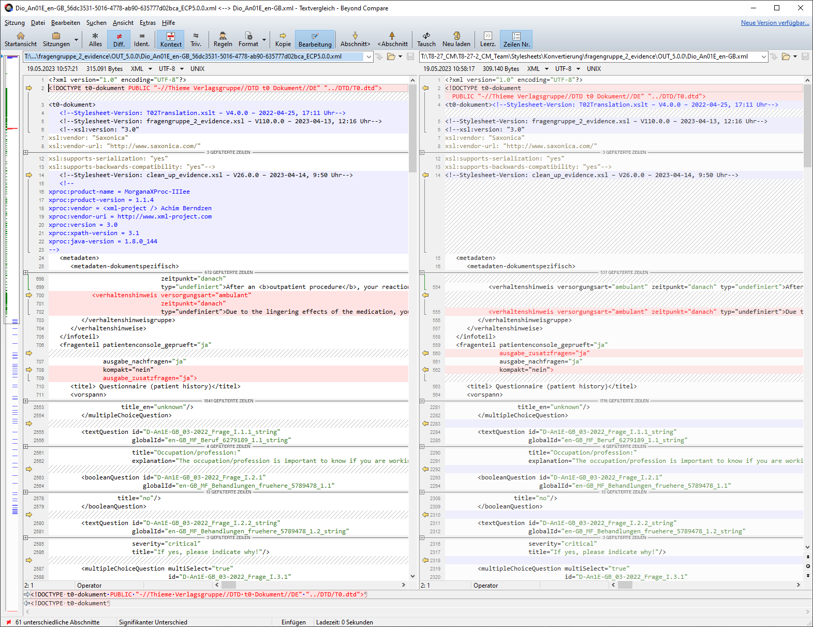

One thing to note is that with XProc 3.0 the serialisation is done by MorganaXProc even though the transformation is still performed by Saxon. Since the XSLT transformation is now orchestrated by XProc 3.0, a <xsl:output> declaration in the stylesheet is now ignored. In particular, the serialisation differs with regard to the order of attributes and whether or not they are presented in a new line. In addition, Also Saxon provides powerful serialisation features which MorganaXProc currently lacks. For instance, there is @saxon:line-length, @saxon:attribute-order or @saxon:double-space, which were used with the batch pipelines. These are useful features for (further) increasing the human readibility of the XML result documents.
Figure 7. Serialisation done by MorganaXProc (left) and Saxon (right)
|  |
We had to ensure that the XML results of the XProc 3.0 pipelines are similar to the results of the batch pipelines. But there were two main issues:
There is some siginificant whitespace handling in the XSLT stylesheets.
Some transformations are now done in XProc itself using <p:insert> and no longer within the XSLT stylesheets.
We were not aware of the serialisation behaviour at first and, aesthetic considerations aside, these shortcomings in MorganaXProc-IIIse made it difficult to compare the results of the original batches with the pipeline results. Comparing the XML results therefore took more time, and the XMLs had to be pretty-printed first, with the downside that this falsified the whitespace handling.